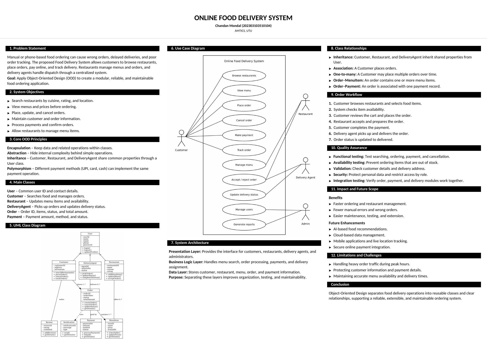
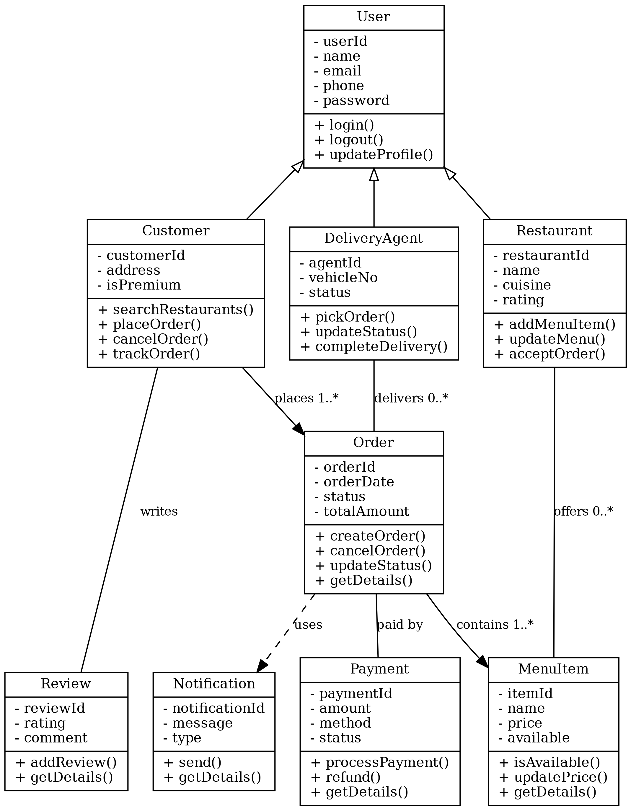
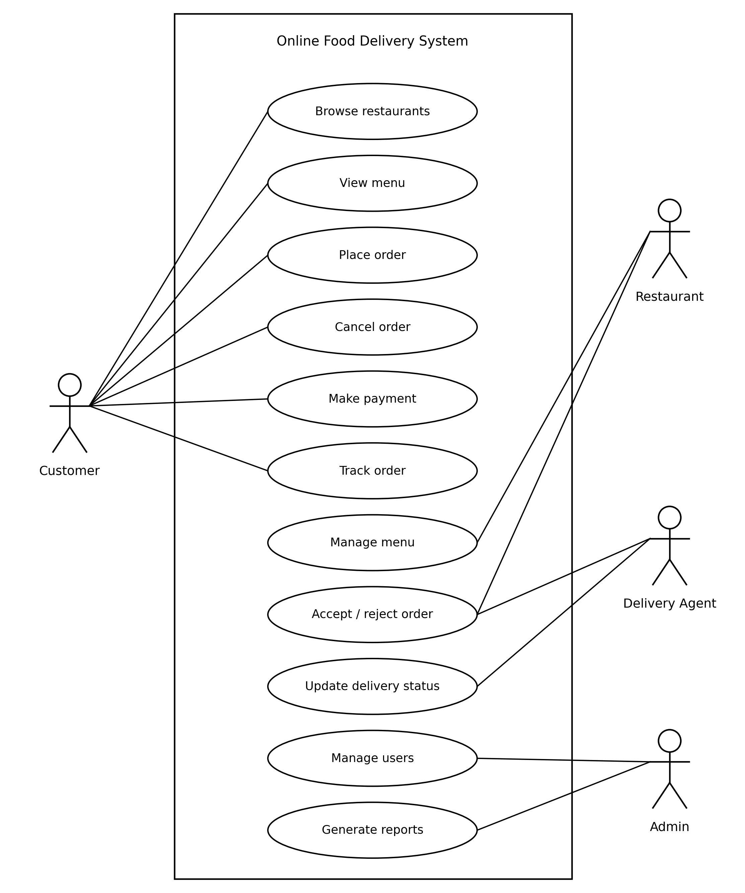

📱
1. Customer orders
Priya opens the app on a busy evening, searches for "paneer tikka" near her home, compares ratings and delivery time, and adds items to her cart.
Object-Oriented Analysis & Design Project
A modular, reliable and maintainable food ordering application designed using Object-Oriented Design and UML.

Click to enlargeA one-page A2 poster that summarises the complete object-oriented design of the system.
Manual or phone-based food ordering can cause wrong orders, delayed deliveries, and poor order tracking. The proposed Food Delivery System lets customers browse restaurants, place orders, pay online and track delivery. Restaurants manage menus and orders, and delivery agents handle dispatch through a centralized system.
Goal: Apply Object-Oriented Design (OOD) to create a modular, reliable, and maintainable food ordering application.
How apps like Zomato, Swiggy or Uber Eats work, and where object-oriented design fits in.
Priya opens the app on a busy evening, searches for "paneer tikka" near her home, compares ratings and delivery time, and adds items to her cart.
The restaurant receives the order on its dashboard, accepts it, and marks the items as being prepared. Sold-out dishes are switched off from the menu.
The nearest delivery agent is assigned, picks up the food and updates the status step by step until it is delivered to the doorstep.
The core principles and main classes used in the system.
Keep data and related operations within classes.
Hide internal complexity behind simple operations.
Customer, Restaurant and DeliveryAgent share common properties through a User class.
Different payment methods (UPI, card, cash) implement the same payment operation.
Purpose: Separating these layers improves organization, testing, and maintainability.
Click an image to view it full screen.


Press "Play" to watch an order move through the system.
Watch a video related to this project.
Object-Oriented Design separates food delivery operations into reusable classes and clear relationships, supporting a reliable, extensible, and maintainable ordering system.